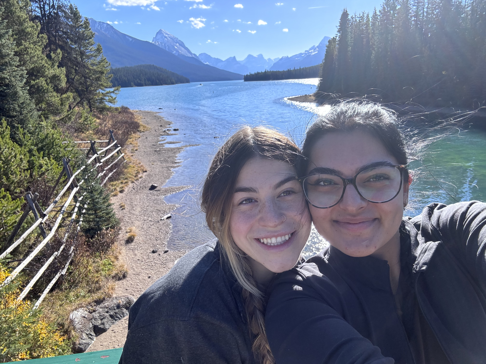

Page 2
Hi there!




Hi there!
In the heart of this thanksgiving weekend trip, as the colour changing leaves of autumn surrounded the landscapes, our journey started in Jasper, Alberta, showing what could've been a painted canvas of serene lakes, majestic mountains, and serene forests. Each photograph from this expedition here shows a glimps into the tales of our adventures together. The first image is on the calm shores of a pristine lake nestled amidst the towering Canadian Rockies in the Valley of the Five Lakes. With reflections of the mountains and dense evergreen trees mirrored in the water, I thik the photo encapsulates the essence of Jasper's untamed beauty. The tranquility captured in this photo elicits a sense of peace and harmony in myself, showcasing the raw beauty of nature in its untouched state, that I find I have never appreciated as much as I do now, now that I've seen it in person.
The second photo was taken on bridge suspended over a tranquil lake that we passed on the drive to a hike on the second day. The lively selfie of my best friend Charlotte and I hopefully captures the joy from the day before's experiences and pure excitement we felt in the days adventures to come. As we stood against the breathtaking backdrop of the Canadian Rockies, the selfie immortalizes the happiness of our shared moments with such beautiful nature views. I feel like the radiant smiles on our faces can tell a story of our friendship, laughter, and the exhilaration of exploring new places together in a landscape that seamlessly encompasses our views of mountains, water, and lush greenery.
The third photograph, like to the first but distinct in its own right, frames another picturesque lake enveloped by mountains and trees, taken at Moose Lake in Jasper. Though sharing the same vibrancy and harmony as the others, I think this image offers a different perspective, really showcasing the diverse beauty found within Jasper's vast ecosystems. The sky so clear and the mountainous peaks show a sense of stillness and calmness, that was followed with self reflection on where I was and how this came to be. Each image from this Jasper trip captures the essence of my favourite season when mother nature herself is in transition, inspiring me to transition myself and my thinking as well. The colors of fall harmonize perfectly with the cool blue of the lakes and greys of the rockies, creating a visual symphony that is both calming and inspiring. These photographs, my frozen moments in time, tell a story of an adventure marked not just by the beautiful sceneries, but by the wonderful time I had with a life long friend that we will both remember forever. Jasper in the fall proves to be a season of revelations, but also the quiet reflection of lakes mirrors the self observations inspired by the ginormous mountains. In every photograph, the spirit of Jasper in autumn comes through, I hope inviting all to embark on a journey that goes beyond the physicality of seeing and touches the very soul of the beholder, like it did mine.